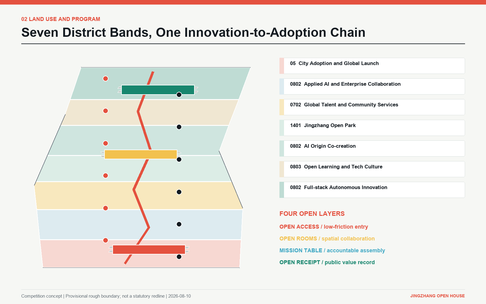
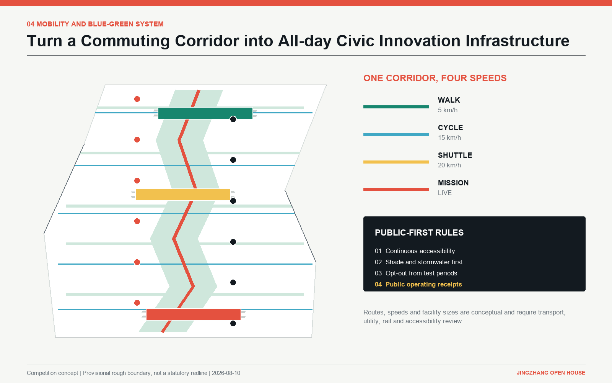
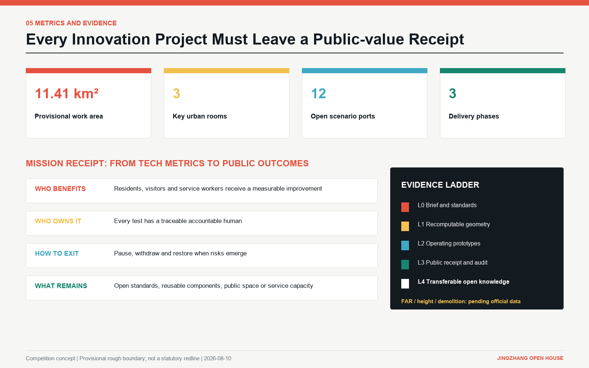

Centennial Jing-Zhang AI Innovation Belt
Jingzhang Open House
Turn every AI visit into a contribution to the city.
Provisional rough boundary. This is a competition concept, not a statutory plan.

Open process
- 01ARRIVE
- 02ASSEMBLE
- 03CO-TEST
- 04RECEIPT
- 05ADOPT / EXIT

11.41 km²provisional work area
9.35 kmconceptual open corridor
22.26%conceptual green ratio
5.56%urban-room public space
Three urban rooms


12 open ports
Each port has a user, accountable human, success receipt and stop condition.
- 01Arrival Exchange
- 02AI City Gallery
- 03Smart-native Market
- 04Resident Co-design Desk
- 05Family Learning Yard
- 06AI Origin Salon
- 07Open-source Foundry
- 08Cross-border IP Clinic
- 09Standards and Safety Lab
- 10Compute and Data Match Desk
- 11Forest Mobility Lab
- 12Global Release Hall

Review coverage
- 01Master map
- 02Three-level scope
- 03Key Areas
- 04Land use
- 05Mobility
- 06Blue-green public space
- 07Buildings
- 08Renewal projects
- 09AI scenarios
- 10Core metrics
- 11Task coverage
- 12Self-check status
- 13Sources
- 14Assumptions
Five gates
- Provisional data never appears as official
- Residents and vulnerable users hold real seats
- Every public service keeps a non-digital option
- Every test has an accountable human and stop rule
- Failure is recorded as evidence
Evidence contract
Geometry and metrics are authoritative. Figures and this page are explanatory. FAR, height, demolition and investment remain pending official information.
geometry/*.geojson · metrics.json · assumptions.json · compliance_matrix.json · standard_matrix.json · design_depth_matrix.json